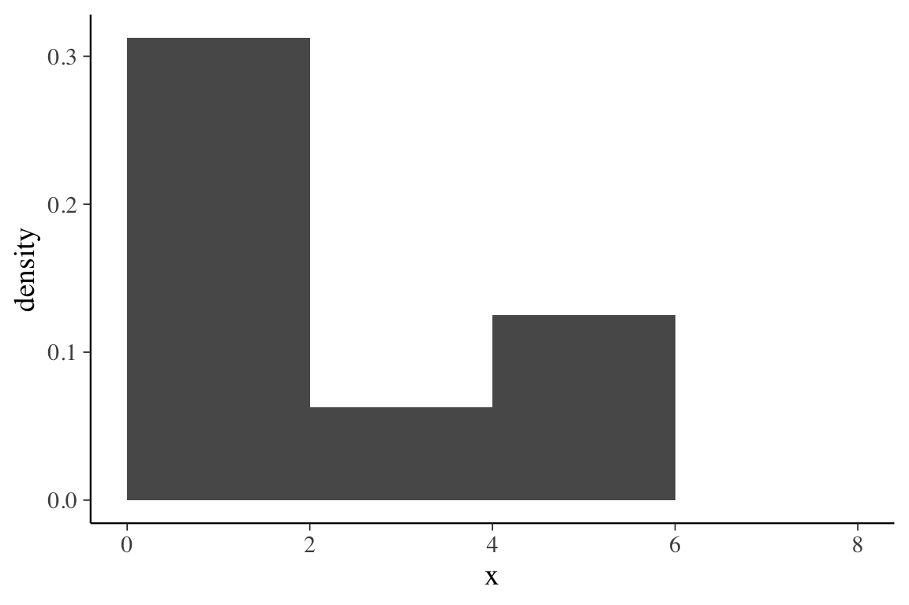
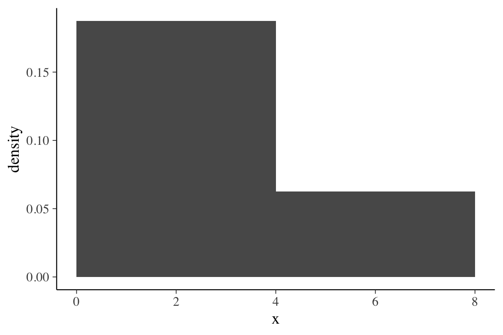
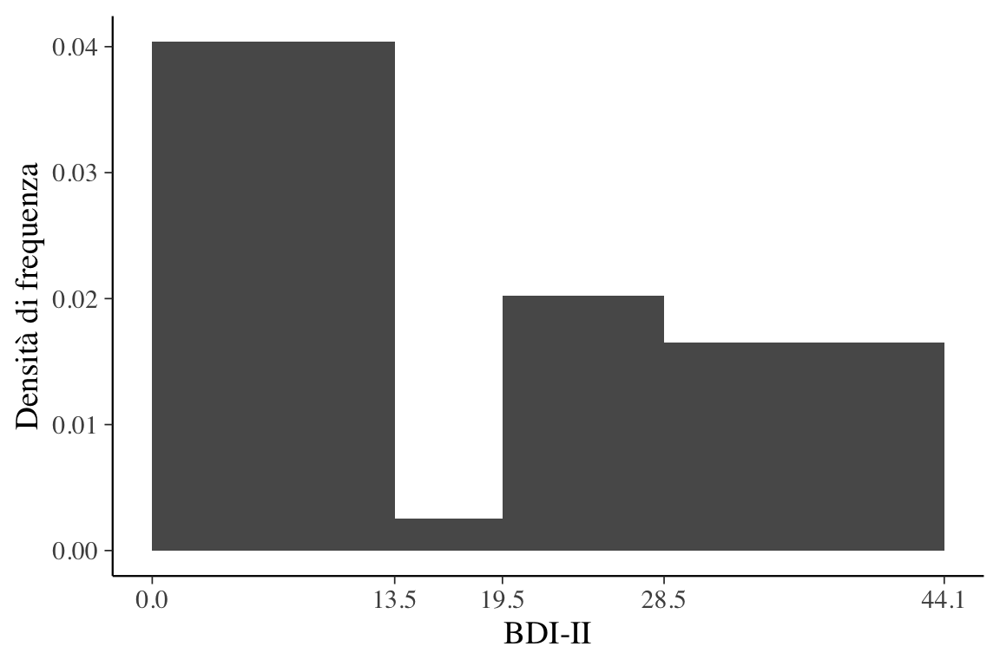
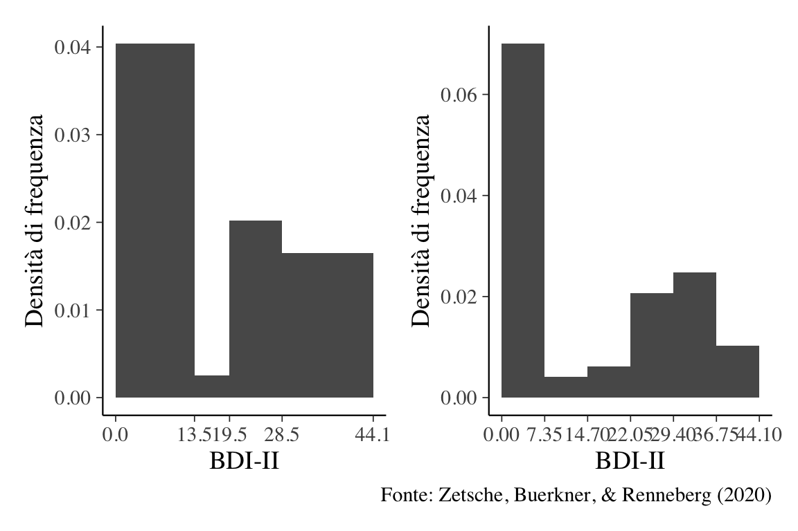
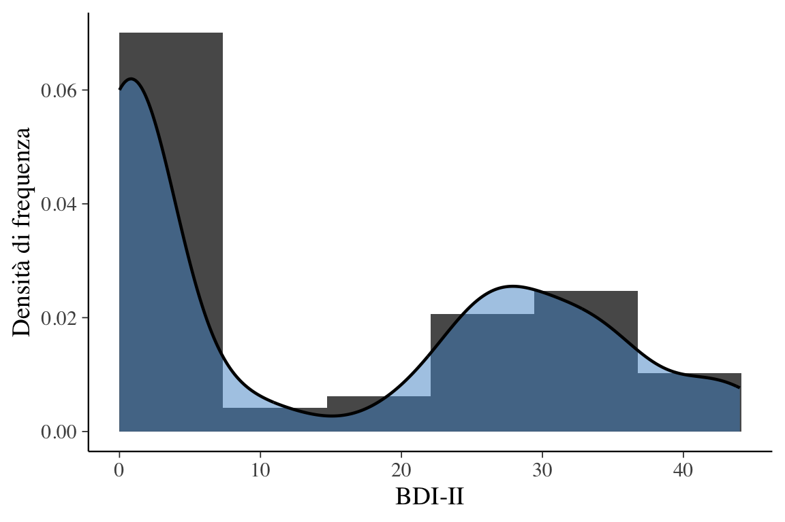
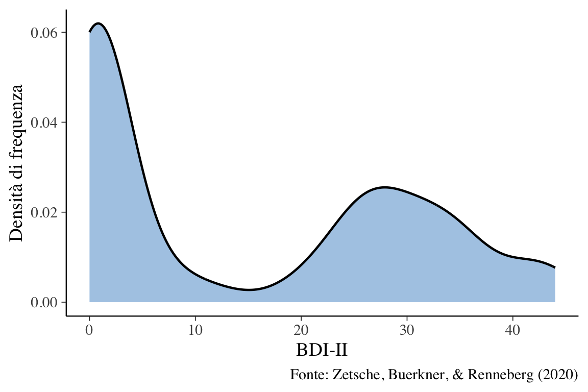
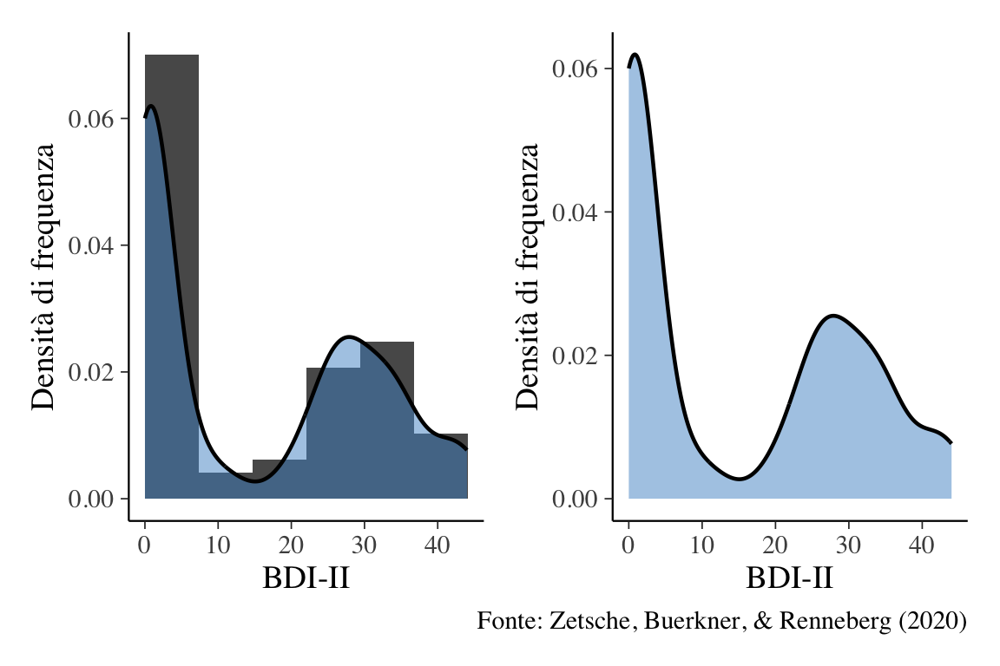

suppressPackageStartupMessages(library("tidyverse"))
theme_set(bayesplot::theme_default(base_size = 14))
suppressPackageStartupMessages(library("knitr"))
suppressPackageStartupMessages(library("kableExtra"))
suppressPackageStartupMessages(library("patchwork"))
knitr::opts_chunk$set(fig.align = "center", fig.width = 6, fig.height = 4)Istogramma
L-24
Psicometria
teaching
La rappresentazione grafica della distribuzione dei dati.
Obiettivi di questo tutorial
In questo tutorial ci poniamo il problema di costruire un istrogramma utilizzando la funzione ggplot() del pacchetto ggplot2 in R. Vedremo quali sono i limiti degli istogrammi. Concluderemo introducendo una rappresentazione alternativa, la densità della frequenza dei dati, la quale attenua i limiti degli istogrammi.
Carichiamo i pacchetti necessari
Introduzione
Iniziamo con delle considerazioni di base.
L’intervallo (a, b] si dice aperto a sinistra e chiuso a destra. Significa
\[ a < x \leq b, \]
ovvero, descrive la situazione nella quale i valori che coincidono con il limite superiore dell’intervallo verranno inclusi nell’intervallo, mentre i valori che coincidono con il limte inferiore dell’intervanno non verranno inclusi nell’intervallo.
Consideriamo questi dati:
x <- c(1, 2, 1, 1, 5, 3, 2, 6)Supponiamo di volere i seguenti intervalli aperti a sinistra e chiusi a destra:
- (0, 2]
- (2, 4]
- (4, 6]
- (6, 8]
Per la variabile x, la distribuzione di frequenze assolute diventa:
| Intervallo | frequenza |
|---|---|
| (0, 2] | 5 |
| (2, 4] | 1 |
| (4, 6] | 2 |
| (6, 8] | 0 |
Se invece consideriamo gli intervalli chiusi a sinistra e aperti a destra, [a, b), ovvero
\[ a \leq x < b, \]
allora otteniamo una diversa distribuzione di frequenze assolute:
| Intervallo | frequenza |
|---|---|
| [0, 2) | 3 |
| [2, 4) | 3 |
| [4, 6) | 1 |
| [6, 8) | 1 |
Usiamo ora R per ottenere i risultati precedenti.
Uno dei modi possibili per calcolare le frequenze assolute è quello di usare la funzione cut(). Mediante tal funzione è possibile dividere il campo di variazione (ovvero, la differenza tra il valore massimo di una distribuzione ed il valore minimo) di una variabile continua x in intervalli e codificare ciascun valore x nei termini dell’intervallo a cui appartiene.
Iniziamo con gli intervalli aperti a sinistra e chiusi a destra:
x_cat <- cut(
x,
breaks = c(0, 2, 4, 6, 8),
right = TRUE
)Possiamo ora usare la funzione table() la quale ritorna una tabella con le frequenze assolute di ciascuna modalità della variabile in input.
table(x_cat)x_cat
(0,2] (2,4] (4,6] (6,8]
5 1 2 0 La distribuzione di frequenze per intervalli chiusi a sinistra e aperti a destra è:
x_cat <- cut(
x,
breaks = c(0, 2, 4, 6, 8),
right = FALSE
)table(x_cat)x_cat
[0,2) [2,4) [4,6) [6,8)
3 3 1 1 Istogramma
Creiamo ora un istogramma usando i valori x.
Qual è l’altezza della barra in corrispondeza dell’intervallo (0,2]?
La base è pari a 2 e l’area è 5/8. Dunque l’altezza è
(5 / 8) / 2[1] 0.3125Usiamo ggplot()
x %>%
as.data.frame() %>%
ggplot(aes(x = x)) +
geom_histogram(
aes(y = after_stat(density)),
breaks = c(0, 2, 4, 6, 8)
)
Questo ci conferma che, di default, ggplot() usa intervalli chiusi a destra.
Cambiamo ora il default e specifichiamo intervalli chiusi a sinistra:
x %>%
as.data.frame() %>%
ggplot(aes(x = x)) +
geom_histogram(
aes(y = after_stat(density)),
breaks = c(0, 2, 4, 6, 8),
closed = "left"
)
Manipolazione dei dati (importazione e pulizia)
Considereremo ora i dati di Zetsche, Bürkner, & Renneberg (2020) e ci poniamo il problema di descrivere la distribuzione dei punteggi BDI-II dei 67 partecipanti. Uno di essi non ha risposto e quindi c’è un dato mancante.
Creiamo la varibile bdi che contiene i valori del valore BDI-II dei 66 soggetti:
bysubj <- data.frame(
bdi <- c(
0, 0, 0, 0, 0, 0, 0, 0, 0, 0, 0, 0, 0, 0, 0, 0, 0, 1,
1, 1, 1, 1, 1, 1, 1, 2, 2, 2, 2, 3, 3, 3, 5, 7, 9, 12, 19,
22, 22, 24, 25, 25, 26, 26, 26, 27, 27, 28, 28, 30, 30, 30, 31, 31, 33,
33, 34, 35, 35, 35, 36, 39, 41, 43, 43, 44
)
)Calcolo delle frequenze assolute
I seguenti cut-off vengono usati per interpretare il BDI‐II:
- depressione minima = 0 – 13,
- depressione lieve = 14 – 19,
- depressione moderata = 20 – 28,
- depressione severa = 29 – 63.
Calcoliamo le frequenze assolute per i seguenti intervalli aperti a destra: [0, 13.5), [13.5, 19.5), [19.5, 28.5), [28.5, 63). Esaminando i dati, vediamo che 36 soggetti cadono nella prima classe. Dobbiamo però eseguire quest’operazione di conteggio utilizzando R.
bysubj$bdi_level <- cut(
bysubj$bdi,
breaks = c(0, 13.5, 19.5, 28.5, 63),
include.lowest = TRUE,
labels = c(
"minimal", "mild", "moderate", "severe"
)
)
bysubj$bdi_level [1] minimal minimal minimal minimal minimal minimal minimal minimal
[9] minimal minimal minimal minimal minimal minimal minimal minimal
[17] minimal minimal minimal minimal minimal minimal minimal minimal
[25] minimal minimal minimal minimal minimal minimal minimal minimal
[33] minimal minimal minimal minimal mild moderate moderate moderate
[41] moderate moderate moderate moderate moderate moderate moderate moderate
[49] moderate severe severe severe severe severe severe severe
[57] severe severe severe severe severe severe severe severe
[65] severe severe
Levels: minimal mild moderate severetable(bysubj$bdi_level)
minimal mild moderate severe
36 1 12 17 Per ottenere le frequenze relative è sufficiente dividere ciascuna frequenza assoluta per il numero totale di osservazioni:
table(bysubj$bdi_level) / sum(table(bysubj$bdi_level))
minimal mild moderate severe
0.54545455 0.01515152 0.18181818 0.25757576 In questo modo abbiamo ottenuto le distribuzioni di frequenza assoluta e relativa.
| Limiti delle classi | Frequenza assoluta | Frequenza relativa |
|---|---|---|
| [0, 13.5) | 36 | 36/66 |
| [13.5, 19.5) | 1 | 1/66 |
| [19.5, 28.5) | 12 | 12/66 |
| [28.5, 63] | 17 | 17/66 |
Istogramma
L’istogramma delle frequenze assolute disegna un rettangolo sopra ogni intervallo specificato, la cui altezza corrisponde alla frequenza assoluta della classe. Per esempio, alla classe [0, 13.5] abbiamo associato la frequenza assoluta di 36. Nell’istogramma delle frequenze assolute l’altezza del primo rettangolo sarà dunque uguale a 36.
Nell’istogramma delle frequenze relative viene invece rappresentata la frequenza relativa delle classi: l’area di ogni rettangolo è proporzionale alla frequenza relativa della classe. Come si trova l’altezza delle barre dell’istogramma in tali circostanze? Per la classe [0, 13.5), ad esempio, la frequenza relativa è 36/66. Tale valore corrisponde all’area del rettangolo. Dato che la base del rettangolo è 13.5, l’altezza sarà 36/66 / 13.5, ovvero {r 36/66 / 13.5}. E così via per le altre barre dell’istogramma.
Visualizzazione con ggplot()
p1 <- bysubj %>%
ggplot(aes(x = bdi)) +
geom_histogram(
aes(y = after_stat(density)),
breaks = c(0, 13.5, 19.5, 28.5, 44.1) # il valore BDI-II massimo è 44
) +
scale_x_continuous(breaks = c(0, 13.5, 19.5, 28.5, 44.1)) +
labs(
x = "BDI-II",
y = "Densità di frequenza"
)
p1
È più comune, però, utilizzare classi di ampiezza uguale.
p2 <- bysubj %>%
ggplot(aes(x = bdi)) +
geom_histogram(
aes(y = after_stat(density)),
breaks = seq(0, 44.1, length.out = 7)
) +
scale_x_continuous(breaks = c(0.00, 7.35, 14.70, 22.05, 29.40, 36.75, 44.10)) +
labs(
x = "BDI-II",
y = "Densità di frequenza",
caption = "Fonte: Zetsche, Buerkner, & Renneberg (2020)"
)p1 + p2
Limite dell’istogramma
Come abbiamo notato sopra, uno dei limiti degli istogrammi è che il profilo dell’istogramma è arbitrario: a seconda del numero e dei limiti delle classi che vengono scelte, cambiano sia il numero che la forma delle barre dell’istogramma.
La densità della frequenza dei dati
Il problema precedente può essere alleviato utilizzando una rappresentazione alternativa della distribuzione di frequenza, ovvero la stima della densità della frequenza dei dati. Un modo semplice per pensare a tale rappresentazione, che in inglese va sotto il nome di density plot, è quello di immaginare un grande campione di dati, in modo che diventi possibile definire un enorme numero di classi di equivalenza di ampiezza molto piccola, le quali non risultino vuote. In tali circostanze, la funzione di densità empirica non è altro che il profilo `lisciato’ dell’istogramma. La stessa idea si applica anche quando il campione è più piccolo. Un esempio è fornito nella figura seguente.
p3 <- bysubj %>%
ggplot(aes(x = bdi)) +
geom_histogram(
aes(y = after_stat(density)),
breaks = seq(0, 44.1, length.out = 7)
) +
geom_density(
aes(x = bdi),
adjust = 0.5,
size = 0.8,
fill = "steelblue3",
alpha = 0.5
) +
labs(
x = "BDI-II",
y = "Densità di frequenza"
)Warning: Using `size` aesthetic for lines was deprecated in ggplot2 3.4.0.
ℹ Please use `linewidth` instead.p3
Guardando il grafico della densità della frequenza dei dati possiamo notare che ci sono due valori che tendono a ricorrere più spesso nella distribuzione dei punteggi del BDI-II. Il primo valore tipico è di poco superiore allo zero. Il secondo valore tipico è all’incirca uguale a 25. Tali valori tipici si chiamano mode. Nel caso presente è sensato che una moda della distribuzione corrisponda ad un valore BDI-II molto basso, dato che il campione include 36 soggetti sani, e che una moda corrisponda ad un valore BDI-II di depressione moderata/severa, in quanto il campione include 30 soggetti clinicamente depressi. Ovviamente, se vogliamo rappresentare solo la densità della frequenza dei dati (senza l’istogramma) procediamo come indicato qui sotto.
p4 <- bysubj %>%
ggplot(aes(x = bdi)) +
geom_density(
aes(x = bdi),
adjust = 0.5,
size = 0.8,
fill = "steelblue3",
alpha = 0.5
) +
labs(
x = "BDI-II",
y = "Densità di frequenza",
caption = "Fonte: Zetsche, Buerkner, & Renneberg (2020)"
)
p4
p3 + p4
Conclusioni
- L’area totale di un istogramma è pari a 1.0.
- Quando guardiamo un istogramma dobbiamo pensare che l’area di ciascuna barra è uguale alla frequenza relativa (ovvero alla proporzione) dei casi che cadono in quella classe.
- L’istogramma ci dice come si distribuiscono (proporzionalmente) le osservazioni di un campione nelle classi che sono state definite.
- Il fatto che l’area totale dell’istogramma sia unitaria significa che essa è la somma di tutte le proporzioni rappresentate dalla barre dell’istogramma.
- Il grafico della funzione di densità empirica attenua l’arbitrarietà della scelta del numero e della dimensione delle classi dell’istogramma e ci fornisce una rappresentazione grafica maggiormente comprensibile.
Informazioni sulla sessione di lavoro
─ Session info ───────────────────────────────────────────────────────────────
setting value
version R version 4.4.2 (2024-10-31)
os macOS Sequoia 15.2
system aarch64, darwin20
ui X11
language (EN)
collate en_US.UTF-8
ctype en_US.UTF-8
tz Europe/Rome
date 2025-01-26
pandoc 3.6.2 @ /opt/homebrew/bin/ (via rmarkdown)
─ Packages ───────────────────────────────────────────────────────────────────
package * version date (UTC) lib source
bayesplot 1.11.1 2024-02-15 [1] CRAN (R 4.4.0)
cli 3.6.3 2024-06-21 [1] CRAN (R 4.4.0)
colorspace 2.1-1 2024-07-26 [1] CRAN (R 4.4.0)
digest 0.6.37 2024-08-19 [1] CRAN (R 4.4.1)
dplyr * 1.1.4 2023-11-17 [1] CRAN (R 4.4.0)
evaluate 1.0.3 2025-01-10 [1] CRAN (R 4.4.1)
farver 2.1.2 2024-05-13 [1] CRAN (R 4.4.0)
fastmap 1.2.0 2024-05-15 [1] CRAN (R 4.4.0)
forcats * 1.0.0 2023-01-29 [1] CRAN (R 4.4.0)
generics 0.1.3 2022-07-05 [1] CRAN (R 4.4.0)
ggplot2 * 3.5.1 2024-04-23 [1] CRAN (R 4.4.0)
glue 1.8.0 2024-09-30 [1] CRAN (R 4.4.1)
gtable 0.3.6 2024-10-25 [1] CRAN (R 4.4.1)
hms 1.1.3 2023-03-21 [1] CRAN (R 4.4.0)
htmltools 0.5.8.1 2024-04-04 [1] CRAN (R 4.4.0)
htmlwidgets 1.6.4 2023-12-06 [1] CRAN (R 4.4.0)
jsonlite 1.8.9 2024-09-20 [1] CRAN (R 4.4.1)
kableExtra * 1.4.0 2024-01-24 [1] CRAN (R 4.4.0)
knitr * 1.49 2024-11-08 [1] CRAN (R 4.4.1)
labeling 0.4.3 2023-08-29 [1] CRAN (R 4.4.0)
lifecycle 1.0.4 2023-11-07 [1] CRAN (R 4.4.0)
lubridate * 1.9.4 2024-12-08 [1] CRAN (R 4.4.1)
magrittr 2.0.3 2022-03-30 [1] CRAN (R 4.4.0)
munsell 0.5.1 2024-04-01 [1] CRAN (R 4.4.0)
patchwork * 1.3.0 2024-09-16 [1] CRAN (R 4.4.1)
pillar 1.10.1 2025-01-07 [1] CRAN (R 4.4.1)
pkgconfig 2.0.3 2019-09-22 [1] CRAN (R 4.4.0)
purrr * 1.0.2 2023-08-10 [1] CRAN (R 4.4.0)
R6 2.5.1 2021-08-19 [1] CRAN (R 4.4.0)
readr * 2.1.5 2024-01-10 [1] CRAN (R 4.4.0)
rlang 1.1.4 2024-06-04 [1] CRAN (R 4.4.0)
rmarkdown 2.29 2024-11-04 [1] CRAN (R 4.4.1)
rstudioapi 0.17.1 2024-10-22 [1] CRAN (R 4.4.1)
scales 1.3.0 2023-11-28 [1] CRAN (R 4.4.0)
sessioninfo 1.2.2 2021-12-06 [1] CRAN (R 4.4.0)
stringi 1.8.4 2024-05-06 [1] CRAN (R 4.4.0)
stringr * 1.5.1 2023-11-14 [1] CRAN (R 4.4.0)
svglite 2.1.3 2023-12-08 [1] CRAN (R 4.4.0)
systemfonts 1.2.0 2025-01-16 [1] CRAN (R 4.4.1)
tibble * 3.2.1 2023-03-20 [1] CRAN (R 4.4.0)
tidyr * 1.3.1 2024-01-24 [1] CRAN (R 4.4.0)
tidyselect 1.2.1 2024-03-11 [1] CRAN (R 4.4.0)
tidyverse * 2.0.0 2023-02-22 [1] CRAN (R 4.4.0)
timechange 0.3.0 2024-01-18 [1] CRAN (R 4.4.0)
tzdb 0.4.0 2023-05-12 [1] CRAN (R 4.4.0)
vctrs 0.6.5 2023-12-01 [1] CRAN (R 4.4.0)
viridisLite 0.4.2 2023-05-02 [1] CRAN (R 4.4.0)
withr 3.0.2 2024-10-28 [1] CRAN (R 4.4.1)
xfun 0.50 2025-01-07 [1] CRAN (R 4.4.1)
xml2 1.3.6 2023-12-04 [1] CRAN (R 4.4.0)
yaml 2.3.10 2024-07-26 [1] CRAN (R 4.4.0)
[1] /Library/Frameworks/R.framework/Versions/4.4-arm64/Resources/library
──────────────────────────────────────────────────────────────────────────────